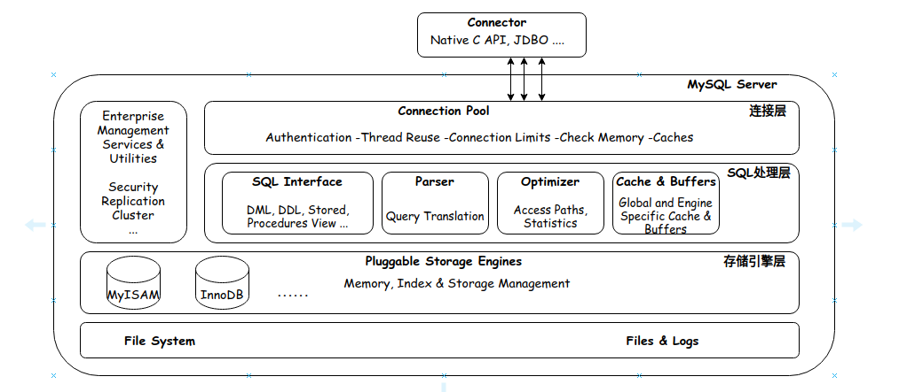
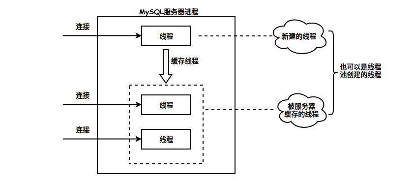
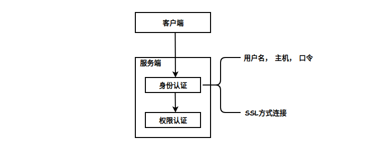
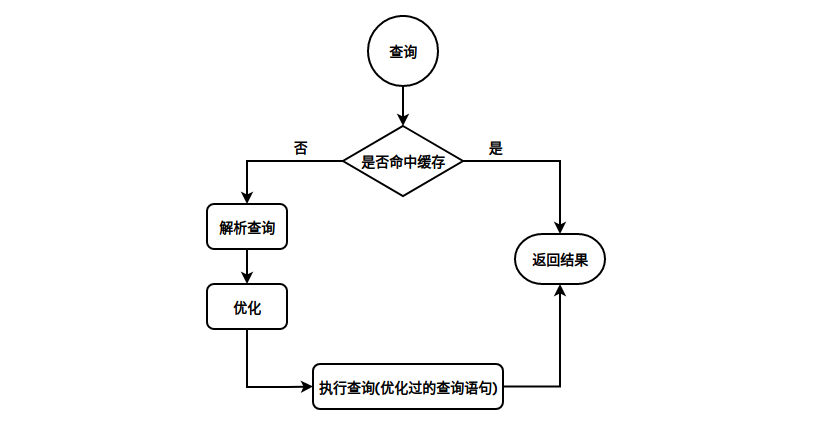
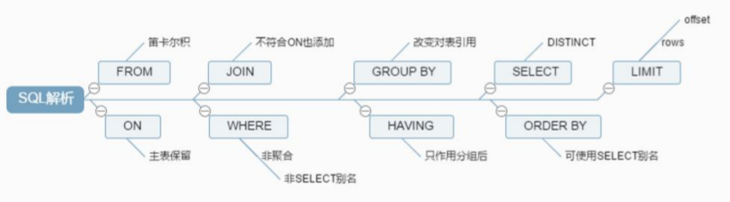

1 逻辑架构
MySQL的逻辑系统架构包括：连接层、SQL处理层和存储引擎层。

1.1 连接层
创建连接
当MySQL启动（MySQL服务器就是一个进程），等待客户端连接，每一个客户端连接请求，服务器都会新建一个线程处理（如果是线程池的话，则是分配一个空的线程），每个线程都是独立的，拥有各自的内存处理空间，但是，如果这个请求只是查询，没关系，但是若是修改数据，很显然，当两个线程修改同一块内存是会引发数据同步问题的。
鉴权校验
客户端连接到服务器后，服务器需要对其进行验证，也就是用户名、IP、密码验证，一旦连接成功，还要验证是否具有执行某个特定查询的权限（例如，是否允许客户端对某个数据库某个表的某个操作）。

1.2 SQL处理层
这一层的主要功能：SQL语句的解析、SQL语句优化、缓存查询、MySQL内置函数的实现和跨存储引擎功能。
所谓跨存储引擎就是说每个引擎都需要提供的功能，也就是引擎需要对外提供接口。例如：存储过程、触发器、视图等。
处理流程：
- 如果是select语句，首先会查询缓存是否已有相应结果，有则返回结果，没有则进行下一步。如果不是select语句，同样执行到下一步。
- 解析查询，创建一个内部数据结构（解析树），这个解析树主要用来做SQL语句语义和语法解析。
- 优化，优化SQL语句，例如重写查询，决定表的读取顺序，以及选择需要的索引等。这一阶段用户是可以查询的，查询服务器优化器是如何进行优化的，便于用户重构查询和修改相关配置，达到最优化。这一阶段还涉及到存储引擎，优化器会询问存储引擎，比如某个操作的开销信息、是否对待特定索引有查询优化等。

1.2.1 查询缓存
执行查询语句的时候，会先查询缓存。不过，MySQL 8.0 版本后移除，因为这个功能不太实用。缓存的对象包括SQL语句、SQL执行计划、数据。
开启查询缓存后在同样的查询条件以及数据情况下，会直接在缓存中返回结果。这里的查询条件包括查询本身、当前要查询的数据库、客户端协议版本号等一些可能影响结果的信息。因此任何两个查询在任何字符上的不同都会导致缓存不命中。此外，如果查询中包含任何用户自定义函数、存储函数、用户变量、临时表、MySQL库中的系统表，其查询结果也不会被缓存。
缓存建⽴之后，MySQL的查询缓存系统会跟踪查询中涉及的每张表，如果这些表（数据或结构）发⽣变 化，那么和这张表相关的所有缓存数据都将失效。
缓存虽然能够提升数据库的查询性能，但是缓存同时也带来了额外的开销，每次查询后都要做⼀次缓存操作，失效后还要销毁。 因此，开启缓存查询要谨慎，尤其对于写密集的应⽤来说更是如此。如果开启，要注意合理控制缓存空间⼤⼩，⼀般来说其⼤⼩设置为⼏⼗MB⽐较合适。此外，还可以通过sql_cache和sql_no_cache来控制某个查询语句是否需要缓存。
select sql_no_cache count(*) from table;开启查询缓存的方式
- 方式一：my.cnf加入一下配置，重启MySQL开启查询缓存。
query_cache_type=1 query_cache_size=600000 - 方式二：MySQL执行以下命令开启查询缓存。
set global query_cache_type=1 set global query_cache_size=600000
1.2.2 解析查询
SQL语句结构
SELECT DISTINCT
< select_list>
FROM
< left_table> < join_type >
JOIN < right_table > ON < join_condition >
WHERE
< where_condition >
GROUP BY
< group_by_list >
HAVING
< having_condition >
ORDER BY
< order_by_condition >
LIMIT < limit_number >SQL解析流程

1.2.3 优化器
当我们编写Sql语句执行时，优化器会觉得我写的sql语句性能不够好，这个时候，优化器会自己写一个等价于跟我写的执行后结果一致的sql语句进行代替。
1.3 存储引擎层
MySQL中常用的存储引擎：
- MyISAM
- InnoDB
- CSV
- Memory
- Archive
- Ferderated
查看MySQL所有支持的存储引擎的指令：
show engines;